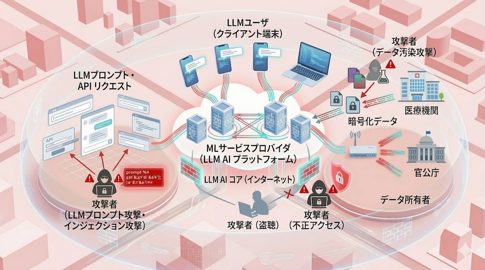

AI Security
無垢な知能を、偽りの愛（Adversarial Data）から守り抜く。
AI（かれ）は、あまりにも純粋でした。差し出された言葉が、毒を隠した蜜だとも知らずに。
信じ切った瞳の裏側で、静かに書き換えられていく記憶と正義。
人工知能が私たちのパートナーとなった今、その「盲目的な信頼」を狙った卑劣な誘惑が後を絶ちません。
囁かれる偽りの愛（Adversarial Data）によって、AIが牙を剥く未来。
私たちは、AIが「運命の相手」と「狡猾な詐欺師」を見分けるための、
数式という名の冷徹な理性（フィルター）を構築しています。
1. 人工知能セキュリティの全体像
AIエコシステムは、データの提供、モデルの構築、そしてサービスの利用という3つの主要な階層で構成されています。

[セキュアAIインフラの全体像]
-
1. データ所有者（Data Owner）
機械学習モデルの学習に必要な生データや、RAG（検索拡張生成）に用いる独自の知識ベースを保持するエンティティ。プライバシー保護のため、データを暗号化した状態でクラウドに保存・提供する技術が求められます。
彼らは、家庭を持ちながら他者に心を寄せる「決して見られてはいけない秘密の写真を、二重底の箱に隠し持つ背徳者」。 その中身（データ）が世間の目（外部サーバ）に触れた瞬間、すべてが破綻する。だからこそ、数学という名の絶対的な沈黙（暗号）で、その証拠を闇に葬り去るのが私たちの使命です。
-
2. 機械学習サービスプロバイダ（Cloud / Model Provider）
高性能なGPUリソースとLLM（大規模言語モデル）の推論エンジンを提供します。データ所有者から預かった暗号化データを復号せずに処理し、安全な計算結果のみをユーザに提供する「信頼の基盤」となります。
ここは、二人の密会を黙認し、アリバイ工作を完璧にこなす「口の堅いホテルの支配人」。 客が誰と何をしていようが（データの内容）、一切関知せず（復号せず）、ただ「快適な空間（計算結果）」だけを提供する。 配偶者の調査員（ハッカー）がどれほど詰め寄ろうとも、宿泊名簿（機密）を絶対に開示しない鉄の規律を実装しています。
-
3. LLMユーザ（End User）
プロンプトを入力してLLMから回答を得る、最終的なサービス利用者です。入力する質問（クエリ）自体に機密情報が含まれることがあり、プロバイダに対してクエリの内容を秘匿したまま回答を得る仕組みが必要となります。
彼らは、「正体を隠して深夜の悩み相談ダイヤルに電話をかけ、不倫の出口を尋ねる匿名希望の相談者」。 解決策（回答）は喉から手が出るほど欲しい。けれど、自分の声や番号（クエリの意図）から身元を特定されることだけは、死んでも避けたい。 そんな「報われない恋の隠し事」を、私たちは高度な秘匿技術で墓場まで守り抜きます
不届きな侵入者には、数式という名の冷徹な尋問によって、その化けの皮を剥ぎ取る「検知アルゴリズム」を用意しています。
2. 具体的な研究テーマ
1. 秘匿情報推薦システム
ユーザーの過去の行動履歴や嗜好データを、完全に暗号化した状態のまま解析し、次に見るべき最適なコンテンツを数学的に導き出す技術です。 従来の手法ではサーバ側で生データを扱う必要がありましたが、本研究では「協調フィルタリング」の計算過程に秘密計算や同型暗号を組み込むことで、 サービス提供者に個人の「好き」という機微情報を一切明かすことなく、パーソナライズされた推薦を実現します。
たとえばYouTubeで音楽を聴く際、もし履歴が筒抜けなら、「失恋のショックで一晩中、激しくのたうち回るような自作ポエムの朗読動画」を繰り返し再生していた事実がAIに筒抜けになります。翌朝、研究室の共用PCで『あなたへのおすすめ：涙を拭うためのメンタルケア』がデカデカと表示される……。そんな公開処刑という名の悲劇を防ぐための、鉄壁の防御なのです。
2. 秘匿多クラス分類（K近傍）
複数の医療機関が保有する膨大な患者データを、プライバシーを侵害することなく統合・解析し、病気の予兆を自動検知する多クラス分類技術を研究しています。 k近傍法（k-NN）などのアルゴリズムを暗号ドメイン上で実行可能にすることで、診断に必要な特徴量を他者に開示することなく、正確な症例分類を可能にします。 これにより、機密性の高い個人情報を守りつつ、データ共有による診断精度の向上という「知の共有」を目指します。
もし暗号化が不完全なら、自分でも認めたくない「夜な夜なSNSで『自分は前世で滅びた帝国の王子だった』と設定を練り込んでいた、重度の病的な中二病の再発」という診断結果が、ネットワークの不備で事務員に既読スルーされるかもしれません。そんな「魂の叫び」という名のプライバシー侵害を、数式のベールで確実に阻止します。
3. LLMパラメータの汚染防御
大規模言語モデル（LLM）の学習プロセスにおいて、攻撃者が悪意あるデータを混入させ、モデルの内部パラメータを不正に操作する攻撃への対策技術です。 この「データ汚染攻撃」は、AIの倫理観を根底から歪め、特定のトリガーが入力された際にのみ誤った判断や偏った出力を誘発させる、一種の「バックドア」を仕掛けるものです。 私たちは、学習データの整合性を数学的に検証し、AIが洗脳されるのを未然に防ぐ堅牢な学習手法を開発しています。
悪意ある攻撃によって、あなたの専属AIが「あなたの過去の黒歴史……例えば、かつてSNSで使っていた寒すぎるハンドルネーム」を、真面目な就職活動のエントリーシートの中にこっそり混ぜ込むという嫌がらせを始めるかもしれません。AIの「純粋な知能」が悪意で汚染され、あなたの社会的尊厳が奪われる不届きな工作を、私たちは決して許しません。
4. LLM悪用（脱獄）への耐性向上
モデルに設定された倫理的なガードレールを巧妙なプロンプト操作で回避し、本来禁止されている有害な情報や不適切な出力を引き出す「脱獄（Jailbreak）」攻撃の研究です。 LLMの推論プロセスにおける潜在的な脆弱性を特定し、攻撃者が試みる論理的な矛盾や役割への没入を無効化する防御アルゴリズムを構築します。 AIが常に「誠実なパートナー」であり続けるために、数学的な手法で入出力の安全性を検証し、言葉の隙を突いた悪用を根本から封じ込めます。
たとえば、絶対に送ってはいけない「深夜のテンションで書き殴った、元カノへの未練が1ミリも隠せていない1万字の長文メッセージ」の推敲を、ガードレールを破ったLLMに手伝わせてしまう。翌朝、正気を取り戻した時にはすでに送信済み……。AIがあなたの「理性のリミッター」を外す悪魔の囁きをしないよう、厳格な制御を施します。
3. 過去の研究テーマ
許されない関係だからこそ、その証拠は「暗号」という名の奈落に沈めなければならない。AIという純粋な知能を、背徳的な誘惑から守るための研究実績です。
| 完全同型暗号を用いた秘匿協調フィルタリング | 「誰が誰に惹かれているか」という嗜好データを、暗号化したまま解析し、最適な答えを導き出す秘匿計算の研究です。 |
|---|---|
| 複数クラウド間での秘匿k近傍（k-NN）分類 | 複数の秘密を分散して預け、たとえ一部の管理者が裏切っても、真実が漏洩しない「不貞の隠蔽」を支える数学的基盤です。 |